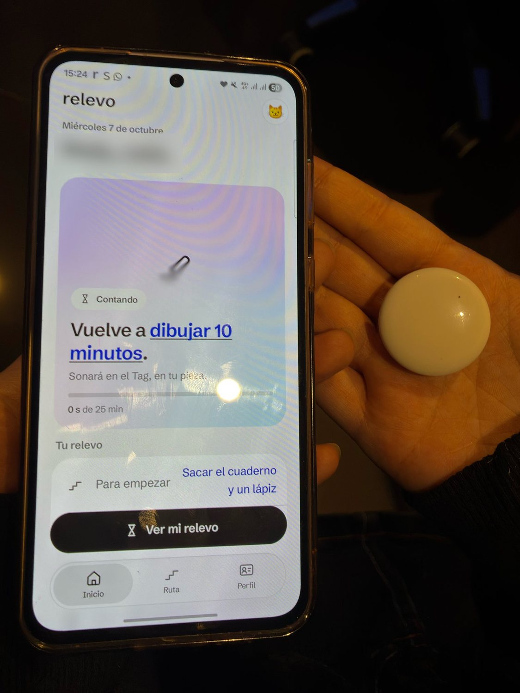
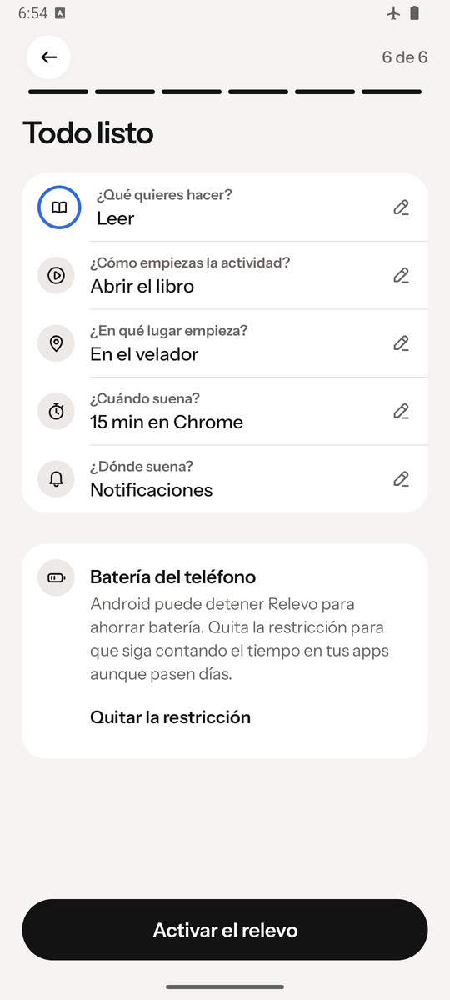
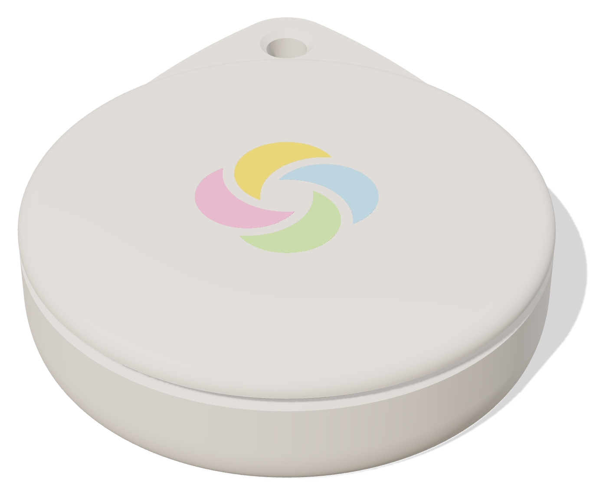
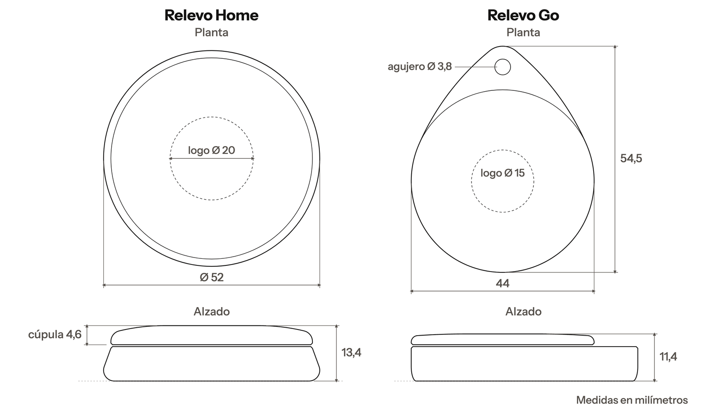

Sistema phygital para recuperar intenciones personales durante el ocio digital
Johan Maximiliano Yantén Acevedo
Profesores guía: Sergio Majluf y Simón Gallardo
Modalidad: Taller de Titulación
Escuela de Diseño · Universidad Diego Portales · Santiago, diciembre de 2026
Actividades que una persona realiza con dispositivos digitales en su tiempo disponible para descansar, entretenerse, satisfacer su curiosidad o vincularse con otros.
Su valor depende del motivo y del tipo de uso, no solo de la duración (Lukoff et al., 2018).
Lo que la persona se propone hacer, como leer o dibujar, y quiere mantener presente mientras dura una sesión de ocio digital.
Experiencias que integran lo físico y lo digital.
En Relevo, una aplicación para Android y un objeto.
Waggoner et al. (2026)

Dónde nace el problema
Mi experiencia
Me quedo en una aplicación más de lo que quería y se me pasa lo que tenía pensado hacer.
Otras personas
En 8 entrevistas y una encuesta a 53 personas, a muchas les pasaba lo mismo, sobre todo en casa.
Anexos A y B
El contexto
En Chile, el 99,1 % de los hogares conectados tiene teléfono inteligente, y muchas aplicaciones están hechas para no terminar.
Subtel (2025); Montag et al. (2019)
El problema
Durante algunas sesiones de ocio digital, una actividad que la persona también quería realizar deja de estar presente y vuelve cuando la oportunidad ya pasó.
No se trata de cuánto se usa el teléfono, sino de lo que se deja de hacer.
Una intención que vuelve tarde
Un ejemplo de una tarde cualquiera.
Antes
Quiere dibujar en la tarde.
Durante
Abre una aplicación para descansar.
Después
Una hora más tarde ya es tarde para empezar.
Nunca decidió no dibujar. La intención no volvió a tiempo.
Tres causas de que una intención vuelva tarde
Atención ocupada
La sesión absorbe la atención. Por eso la intención depende de una señal.
McDaniel y Einstein (2000, p. S138)
Continuidad sin final
El contenido sigue solo, y un sistema elige qué viene después.
Montag et al. (2019); Covington et al. (2016)
Ocio juzgado
Si el descanso se vive como tiempo perdido, se disfruta menos.
Tonietto et al. (2021)
Desafío de diseño
Ayudar a que la persona recuerde a tiempo algo que quería hacer, sin bloquear lo que está haciendo, sin decidir por ella y sin intervenir cuando el ocio digital conserva sentido.
La experiencia del ocio digital
El motivo se pierde mientras se usa.
Una aplicación se abre a propósito
Sigue por costumbre
Hace falta un momento para volver a decidir
¿Usaban la aplicación para algo concreto?
45 personas respondieron cada vez que usaban el teléfono.
Al abrirla: sí, 2 de cada 3 veces
65,6 %
Mientras la usaban: sí, 1 de cada 2 veces
51,4 %
Lukoff et al. (2018, p. 22:16)
Pide mirar cada sesión por su sentido y respetar el descanso.
El diseño de la atención
Elegir fortalece la motivación; las órdenes la debilitan (Ryan y Deci, 2000, p. 70).
Una orden
Bloquear u obligar.
Una elección
Aceptar, ajustar o rechazar.
Motivación más débil
Motivación más fuerte
Dos herramientas
Una fricción, como esperar o confirmar, hace reconsiderar, pero puede estorbar.
Grüning et al. (2023); Haliburton et al. (2024)
Un plan ayuda si vuelve a la mente a tiempo.
Gollwitzer y Sheeran (2006)
Pide una ocasión de decidir y una ayuda que se pueda aceptar, ajustar o rechazar.
Recordar con objetos y lugares
La memoria prospectiva es recordar una acción cuando llega la ocasión de hacerla (McDaniel y Einstein, 2000).
La atención está en otra parte
La intención vuelve
Vigilar
Exige atención constante y se vuelve difícil si otra actividad la absorbe.
Una señal del entorno
Puede funcionar aunque la atención esté en otra parte. Relevo usa este camino.
Ayudan más los recordatorios que nombran la acción y la ocasión, no solo la ocasión (Guynn et al., 1998, p. 296).
Seguir más de lo que se quería es frecuente y pasa en casa
Encuesta a 53 personas de 19 a 30 años, después de 8 entrevistas. Cada total es de quienes respondieron.
39de 45
siguieron en una aplicación más de lo que querían
43de 47
querían hacer otra cosa en ese tiempo
42de 43
sabían cuál habría sido su primer paso
44de 47
estaban en casa
Primer paso: la acción breve con que empieza una actividad, como abrir un libro. Es lo que Relevo recuerda.
Dos situaciones de uso
Tipos ideales, a partir de las entrevistas y la encuesta (Stapley et al., 2022).
Usuario principal
Quiere hacer otra cosa y la pierde de vista mientras la sesión sigue.
Necesita recordarla a tiempo.
Usuario límite
El teléfono tiene sentido: una videollamada, un pódcast al comer.
Necesita poder ignorar o detener la señal.
Ambas pasan sobre todo en casa, y una misma persona puede estar en una u otra según el día.
Casi todas las herramientas limitan el uso o trabajan en la pantalla
Fuera de la pantalla
En la pantalla
Limita el uso del teléfono
Recuerda lo que la persona quería hacer
Ubicación aproximada, según la documentación de cada producto y los estudios citados (Lyngs et al., 2019, sobre 367 herramientas).
Pregunta e hipótesis
Pregunta
¿Cuál es el efecto de un sistema phygital que vincula una actividad pendiente con su lugar de inicio sobre el recuerdo oportuno de esa actividad durante el ocio digital?
Hipótesis
Si
se diseña un sistema phygital que vincula una actividad que la persona quiere hacer con el lugar donde comienza,
entonces
la persona la recordará a tiempo durante el ocio digital,
porque
una intención se recupera cuando aparece una señal asociada a ella.
Asociación
Al oír la señal, recuerda qué hacer y cómo empezar.
Decisión
Elige con libertad qué hacer.
Soporte
El objeto ayuda tanto como una notificación, sin más molestia.
Recuerdo oportuno: al sonar la señal, la persona sabe qué quería hacer y cómo empezar antes de leerlo en la pantalla.
De un objeto para dejar el teléfono a una señal en el lugar
De marzo a noviembre de 2026.
Primero el objeto era un lugar donde dejar el teléfono. Después pasó a ser una señal en el lugar donde empieza la actividad.
Cómo funciona Relevo
Una aplicación para Android y un objeto que suena junto al primer paso de una actividad. Cada actividad preparada se llama un relevo.
Preparar
Seguir en el teléfono
Oír la señal
Decidir
Preparar
Una pregunta por pantalla, con opciones para elegir. Por ejemplo, para leer:
- 1¿Qué quieres hacer?Leer
- 2¿Cómo empiezas la actividad?Abrir el libro
- 3¿En qué lugar empieza?En el velador
- 4¿Cuándo suena?15 min en las apps elegidas, de 1 min a 6 h
- 5¿Dónde suena?El Tag, un parlante o una notificación
- 6Todo listoActivar el relevo
Y deja el objeto junto al primer paso: al lado del libro.
Seguir en el teléfono
Usa el teléfono como siempre. La aplicación suma solo el tiempo en las aplicaciones elegidas, con un permiso de Android.
Nunca ve lo que pasa dentro de ellas.
Por ejemplo, un relevo de 15 minutos en Chrome
Chrome
Mensajes
Chrome
Cuenta solo el amarillo
15 min → suena
Oír la señal
Cuando se cumple el tiempo, el objeto suena unos 30 segundos desde el lugar de la actividad.
Se puede callar con el botón del objeto o desde la aplicación, a la derecha.
El sonido avisa. El lugar y el primer paso dicen qué hacer (Norman, 1988/2002, p. 73).
El Tag en un hogar de la prueba.
Decidir
Después de la señal vienen unas preguntas breves, que se pueden saltar.
Registran si notó el aviso, cómo le cayó el sonido y si supo qué hacer antes de mirar la pantalla.
Al final, elige qué hacer:
Las tres tienen el mismo tamaño, color y lugar, y ninguna viene marcada: “Ninguna respuesta es mejor que otra”.
La aplicación, más allá de un relevo
Grabaciones de la versión 4.8.2 en un emulador de Android, a 1,2 veces su velocidad.
El sistema completo
Arriba, lo que usa la persona. Abajo, lo que no se ve.
se ve
no se ve
La persona
Prepara el relevo y, cuando suena, decide qué hacer.
La aplicación
Cuenta el tiempo de uso con un permiso de Android y, al cumplirse, hace sonar el Tag.
El Tag
Suena junto al primer paso. Solo entiende dos órdenes.
usa
Bluetooth · sonar y callar
internet · con un código en lugar del nombre
Supabase
Base de datos en internet. Guarda relevos y respuestas.
consulta
Panel de la prueba
En el computador del investigador. Muestra resultados y envía mensajes.
Privacidad
Sin correo ni contraseña. Cada teléfono ve solo sus datos, y la persona puede borrarlos. Se eliminan a más tardar el 30 de diciembre de 2026.
Cada decisión responde a un criterio
Ocho criterios, salidos de lo investigado (Kolko, 2011, p. 40). Aquí, en la pantalla que resume un relevo.

6 · Prepararlo toma poco esfuerzo.
1 · La persona elige qué quiere hacer.
2 · Cada actividad empieza con un paso concreto.
3 · La persona decide cuándo suena.
8 · El objeto suma algo que el teléfono no da.
7 · Lo que la persona escribe es privado.
Se queda en el teléfono. Al Tag solo llegan dos órdenes.
4 · La persona decide qué hacer cuando suena.
5 · El sistema interviene solo cuando hace falta: suena solo si hay un relevo preparado.
Tres ideas: partir de la persona (1 y 2), dejarle las decisiones (3 a 5) y justificar el esfuerzo (6 a 8).
Por qué cada decisión
| Ámbito | Decisión | Fundamento | Lo que se descartó |
|---|---|---|---|
| Sistema | Aplicación, objeto y lugar. | La señal llega desde fuera de la pantalla. | Bloquear o pausar; solo notificar. |
| Recorrido | Una pregunta por pantalla. | Prepararlo pide poco esfuerzo. | Un formulario único. |
| Condición | Tiempo en las aplicaciones elegidas. | Es fácil de entender y de ajustar. | Uso continuo y franjas horarias. |
| Arquitectura | Inicio, Actividades y Perfil. | Acompaña a lo esencial del usuario. | Todo a la vez, al mismo tiempo. |
| Lenguaje visual | Pautas de Apple como referencia. | Equilibran belleza y legibilidad. | Interfaz plana. |
| Comunicación | De tú, con preguntas cotidianas. | Una orden presiona; una pregunta, no. | Rachas, puntos y apuros. |
| Identidad | Seis colores pastel de igual peso. | Ningún momento se impone a otro. | Colores por emoción. |
| Objeto | Un Tag comercial. | Probar señal y lugar antes de fabricar. | Localizadores de ecosistema cerrado. |
| Señal | Sonido de unos 30 s que termina solo. | Alcanza a quien mira una pantalla. | Vibración o una alarma que insiste. |
| Datos | Código en vez de nombre. | Lo que la persona escribe es privado. | Registrar datos innecesarios y personales. |
Tabla 1 de la memoria.
El objeto
La prueba usó un Tag comercial. La propuesta es Relevo: una carcasa propia para la placa del Tag, en dos variantes.
Tag de la prueba
Llavero Bluetooth que suena cuando la aplicación lo pide.

Relevo Home
Junto al primer paso.
52 mm de diámetro y 13,4 mm de alto.

Relevo Go
Más portátil, con argolla.
44 × 54,5 mm y 11,4 mm de alto.
Toda la cara es el botón para silenciar, y el sonido sale por esa misma zona. Es más grande que el Tag para encontrarlo, controlarlo y fabricarlo: se imprime en 3D, sin soportes.
Modelos 3D, no impresos. Las medidas de la placa del Tag son supuestas. Planos, corte y piezas en el Anexo H.
Identidad
Un relevo es el momento en que algo pasa de una mano a otra: de la pantalla a la actividad.
El tiempo
El primer paso
El lugar
La decisión
Instrument Sans, en Regular, Medium y SemiBold. Logotipo en Chillax.
Seis colores pastel de igual peso.
Íconos de Lucide, con algunos adaptados y tres propios.
Prueba en los hogares
Tres personas, cinco semanas: primero con el Tag junto al primer paso y después solo con el teléfono.
7 oct. Inicio
8 al 19 oct. Con el Tag
21 oct. al 8 nov. Solo con el teléfono
10 nov. Cierre
Primera persona
Estudiar, ordenar su pieza o dibujar.
Tag en el escritorio.
15 min en Instagram, X o YouTube.
Segunda persona
Tocar guitarra.
Tag junto a la guitarra.
45 min, y luego 35, en Instagram, YouTube o Reddit.
Tercera persona
Dibujar en su croquera.
Tag en el escritorio.
25 min en TikTok.
Después de cada señal, la aplicación preguntó: ¿supiste qué querías hacer antes de leerlo?, ¿recordaste cómo empezar? y ¿qué decidiste?
Con el Tag, el ciclo funcionó con las tres personas
Del 8 al 19 de octubre. Cada punto es una respuesta después de una señal.
19 de 21
supieron qué querían hacer antes de mirar la pantalla
21 de 21
recordaron cómo empezar
10 de 21
empezaron la actividad
● empezaron · ● la dejaron para después · ● cambiaron de idea
Lo que decidió cada persona
Primera
Segunda
Tercera
Cada una repitió su actividad en un mismo lugar.
El Tag sonó en 23 de 24 relevos; el que faltó se cumplió fuera de casa. Se cumplieron las tres condiciones del ciclo: sonó cuando correspondía, al oírlo supieron qué hacer y cómo empezar, y siguieron usando Relevo.
Con el teléfono recordaron igual, pero dos de tres personas respondieron más tarde
Del 21 de octubre al 8 de noviembre, la señal llegó solo como notificación.
Segundos que tardaron en responder
■ con el Tag
■ con el teléfono
10de 21
respuestas en que el aviso del teléfono se notó tarde o no se notó.
“con el celu veia el aviso, decia ya voy y seguia viendo el video”
Segunda persona de la prueba
Recordar fue igual de fácil: supieron qué hacer y cómo empezar en todas sus respuestas. Cambió el momento de notar la señal.
Qué respondió el proyecto
La pregunta
¿Una señal desde el lugar de la actividad ayuda a recordarla a tiempo?
Casi siempre recordaron a tiempo.
Pero no se puede atribuir al Tag, porque con el teléfono recordaron igual, ni al lugar, porque el Tag nunca estuvo lejos de la actividad.
La hipótesis
Era la respuesta que se esperaba.
Compatible con los resultados, pero no probada.
Fueron tres personas, y la etapa con el teléfono vino siempre después de la del Tag.
Asociación
Se cumplió casi siempre.
Decisión
Se cumplió: ninguna persona se sintió obligada.
Soporte, el Tag
En parte: su sonido molestó más a quienes estaban cerca.
Dos hallazgos para el diseño
La señal depende del objeto
El único relevo que no sonó se cumplió fuera de casa, lejos del Tag.
Recordar no obliga a empezar
Una señal lleva a actuar solo si coincide con la motivación y la facilidad del momento (Fogg, 2009, p. 1).
Quiere hacerlo, pero el primer paso cuesta.
La señal basta para empezar.
La señal recuerda, pero no lleva a empezar.
Puede empezar o dejarlo para después.
Motivación
Facilidad para empezar →
Relevo actúa sobre la facilidad: deja la señal junto a un primer paso concreto. La decisión sigue siendo de la persona.
Lo que sigue
La próxima prueba
Seis personas, tres semanas en distinto orden: así se separa el efecto del objeto, del lugar y del orden.
Algunos relevos se cumplirían sin señal, para medir cuánto se debe solo a haberlo preparado.
Factibilidad en tres etapas
Prototipo académico
Unos 111 000 pesos y el trabajo del autor. Ya existe.
Piloto en seis hogares
Con Relevo impreso: de 10 100 a 12 150 pesos por hogar. Fondart Nacional, línea de Investigación.
Producto
Costos por cotizar. Semilla Inicia de Corfo o Capital Semilla de Sercotec.
Cada etapa empieza solo si la anterior entrega evidencia.
Se convirtió una tensión cotidiana en decisiones de diseño que se pueden comprobar: qué se recuerda, cuándo, dónde, con qué objeto y con qué opciones.
Gracias
Del Seminario a hoy
Lo que pidió la comisión el 20 de julio y dónde se responde.
Aarón Montoya-Moraga
Explicar físicamente el objeto. Relevo Home y Go: medidas, botón y tapa (cap. 11 y Anexo H).
Android frente a iOS. En el iPhone, medir otras aplicaciones exige una autorización especial de Apple (cap. 12).
Precio, instalación y costos. Prototipo, piloto y producto, con montos (cap. 12, Tabla 2).
El rol del diseñador frente a la IA. Lo que hice y lo que hicieron las herramientas (cap. 10 y Anexo E).
Que el objeto no solo moleste. Tres condiciones del ciclo; el pitido molestó en 2 de 21 respuestas (cap. 13).
Mostrar primero qué es Relevo. Aparece en la definición de phygital y en “Cómo funciona Relevo”.
Sofía Suazo
Quiénes fueron consultados y cómo incidieron. 8 entrevistas, 53 respuestas y criterios con su fuente (cap. 7 y 9).
Por qué el hogar. 44 de 47 personas estaban en casa (Figura 10).
Flujo técnico y del usuario. Recorrido, flujo, estados y sistema (Figuras 20 a 22 y 30).
Luz, sonido o vibración. El sonido alcanza a quien mira una pantalla; para quien no oye, avisa la pantalla (cap. 11).
No todo lo lúdico es punitivo. Sin rachas: en Betterfly subieron un 6,4 % frente a una meta del 20 % (cap. 8 y 9).
La higiene del sueño. Fuera del alcance; la mejora es excluir horas del día (Tabla 4).
Objetivos
General: diseñar y evaluar Relevo, un sistema que ayude a recordar a tiempo algo que la persona quería hacer mientras descansa con el teléfono, con una señal junto al primer paso de esa actividad y la decisión en sus manos.
1 · Entender
cuándo el uso del teléfono desplaza algo que la persona quería hacer.
Se cumplió.
2 · Diseñar
una aplicación y un objeto que lleven esa intención al lugar donde la actividad empieza.
Se cumplió.
3 · Comparar
el sonido del objeto junto al primer paso con una notificación en el teléfono.
En parte.
4 · Probar
en hogares si las personas reconocen la señal y si les resulta cómoda.
Se cumplió.
Indicador del objetivo 4: la proporción de respuestas con recuerdo oportuno (19 de 21) y con la actividad empezada (10 de 21).
Método: investigar a través del diseño
Diseñar la aplicación y el objeto fue también una forma de investigar (Zimmerman et al., 2007). Evaluación formativa (Nielsen, 1993).
Investigar
Revisión bibliográfica.
Ocho entrevistas, comparadas por persona y tema (método Framework).
Encuesta de 53 respuestas.
Estado del arte.
Diseñar, probar y cambiar, en ciclos
Criterios
Ocho criterios de diseño
Diseño
La aplicación y el objeto
Prueba
Tres personas, cinco semanas
Hallazgos
Lo que hicieron, no solo lo que dijeron
Cambios
Nueve cambios en la aplicación
Especialista consultado: Denis Parra (Pontificia Universidad Católica de Chile). Inteligencia artificial en la programación, el modelo 3D y la revisión: Cursor, Codex y Claude (Anexo E).
La señal es un sonido, porque alcanza a quien mira una pantalla
Unos 30 segundos
Termina sola o se silencia: más presencia que una notificación y más amable que una alarma.
Menos urgente
En el teléfono, dos golpes de madera que bajan de tono: un sonido que desciende se percibe menos urgente.
Edworthy et al. (1991). El Tag usa su pitido de fábrica.
Desde el lugar
Llega desde donde empieza la actividad, fuera de la pantalla.
41de 53
personas de la encuesta preferían un sonido de 15 segundos o menos.
En la prueba, el sonido les pareció bueno o neutro casi siempre, pero la mayoría de las veces lo callaron antes. Una señal más breve podría bastar.
Cambios a partir de la prueba
11 → 3
pantallas antes del primer relevo, que ahora es guiado.
Editar un relevo activo.
Durante la prueba.
Callar el Tag con confirmación.
Durante la prueba.
Si el Tag no responde, suena el teléfono.
Después de la prueba.
Relevo activo más simple.
Después de la prueba.
Proponer un límite breve.
Después de la prueba.
Excluir horas del día.
Después de la prueba.
Dejar la actividad lista para otro momento.
Después de la prueba.
Volumen regulable y un sonido más suave.
En el teléfono; en Relevo, por probar.
Tabla 4 de la memoria (Anexos D y G).
Planos y piezas


Cúpula con el logo, pulsador, base, chasis y tapa. Adentro, la placa y la pila del Tag.
Se imprime en 3D en PLA, sin soportes: a lo más 20 g en Home y 13 g en Go. Medidas en milímetros; la placa del Tag es supuesta (Anexo H).
En Chile, el teléfono es la puerta a internet
96,6 %
de los hogares tiene internet propio y pagado.
99,1 %
de los hogares conectados tiene un teléfono inteligente.
Pero las cifras no dicen si cada momento frente a la pantalla fue elegido.
Subsecretaría de Telecomunicaciones (2025).
La interfaz sostiene la continuidad
“que el usuario pase mucho tiempo viendo videos para poder poner publicidad y monetizar así la plataforma”
Denis Parra, especialista en sistemas de recomendación (Pontificia Universidad Católica de Chile), comunicación personal, 4 de noviembre de 2026.
En YouTube, el modelo de recomendaciones se entrenó para predecir cuánto tiempo se verá cada video (Covington et al., 2016). Lo que elegimos en el momento no siempre es lo que queremos (Kleinberg et al., 2024).
Por dentro: la persona, la aplicación y el Tag
| 1 · Preparar | 2 · Seguir en el teléfono | 3 · Oír la señal | 4 · Decidir | |
|---|---|---|---|---|
| Persona | Anota la actividad y deja el Tag. | Usa el teléfono como siempre. | Oye la señal y puede callarla. | Responde qué decidió. |
| Aplicación | Guarda el relevo y prueba el sonido. | Suma el tiempo de las aplicaciones elegidas. | Ordena sonar; si el Tag no responde, suena el teléfono. | Guarda la respuesta y, con permiso, la envía. |
| Tag | Queda junto al primer paso. | Espera conectado por Bluetooth. | Suena unos 30 segundos. |
Al Tag solo llegan dos órdenes, sonar y callar: lo que la persona escribe se queda en el teléfono.